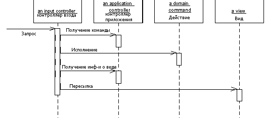

Application Controller (Контроллер приложения)

Паттерн проектирования Application Controller
Описание Application Controller
Единая точка управления отображением и выполнением приложения.
Некоторые приложения содержат в разных своих частях значительное количество кода, управляющего отображением, и который может влиять на некоторые отображения в некоторых условиях. Конечно, есть пошаговый тип взаимодействия, когда пользователь последовательно проходит через страницы (экраны) в строго определённом порядке. В остальных же случаях могут быть страницы, появляющиеся только в определённых условиях или выбор следующего отображения зависит от того, что ввёл пользователь ранее.
В некотором роде, различные контроллеры в паттерне MVC могут делать этот выбор, однако с ростом приложения это выльется в дублирование кода, так как несколько контроллеров должны будут знать, что делать в той или иной ситуации.
Устранить это дублирование можно посредством помещения всей логики выполнения приложения в Контроллер приложения (Application Controller). Тогда контроллер входа (Input Controller) будет обращаться к контроллеру приложения (Application Controller) за необходимыми к выполнению на модели и за необходимыми представлениями (view) в зависимости от контекста.
Использована переведённая иллюстрация с сайта Мартина Фаулера